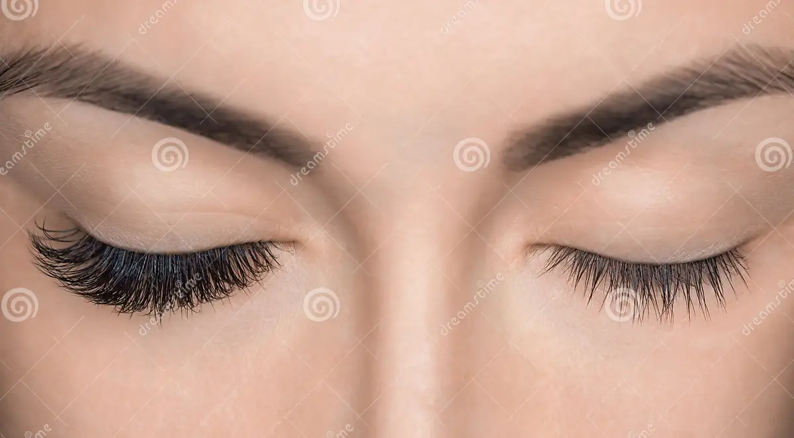
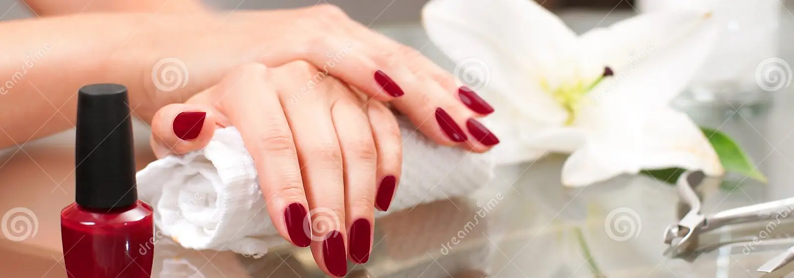
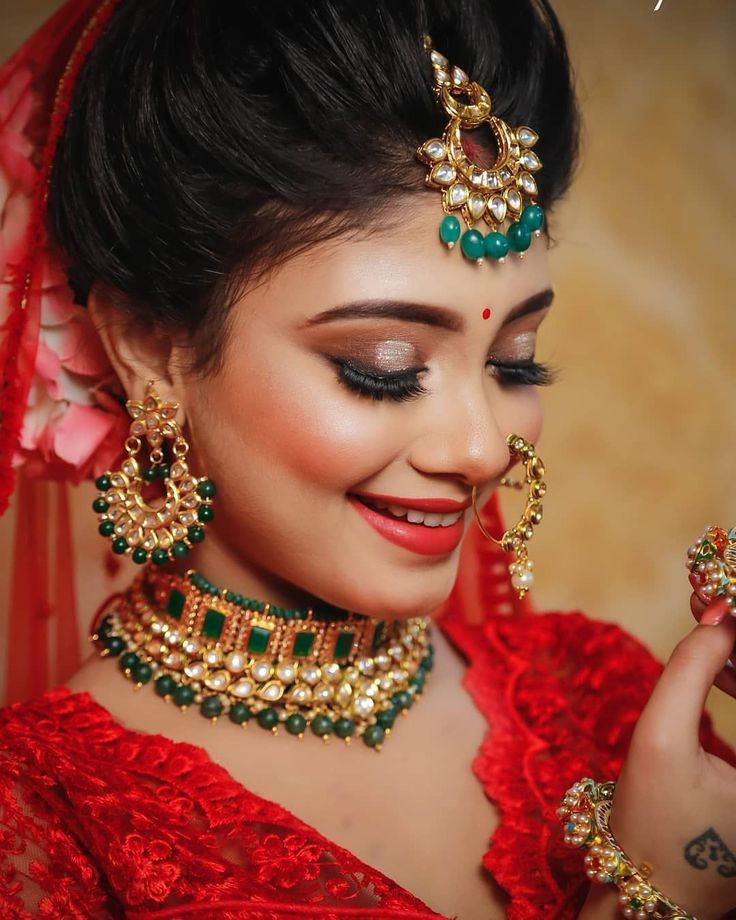
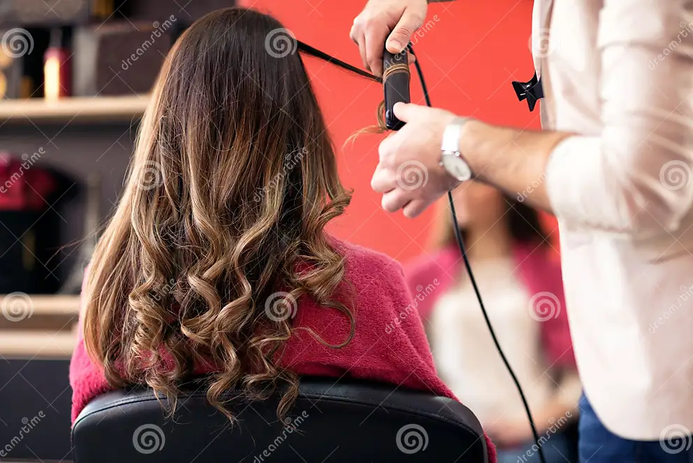
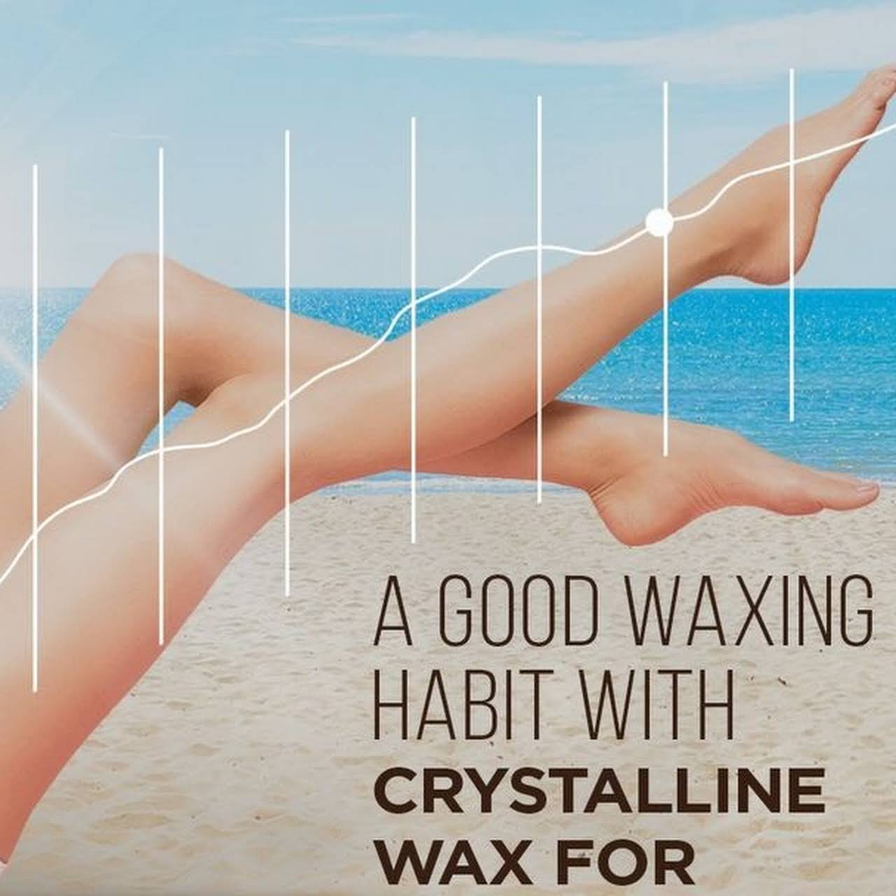

One of the main reasons people get facials is to deeply
cleanse and exfoliate their skin. Removing dirt, oil,
and impurities from your skin is a necessity for clear,
healthy skin. Receiving regular exfoliation removes dead
skin cells, which promotes new skin cell growth.

Eye makeup
Just because you want to be glamorous, don't
be a sheep about your eye makeup.
winged eyeliner be sharp enough to kill
Your eye makeup says so much about you and your style.

Nail Art
Nail art is a vacation for plain nails. It's
all fun and games until someone breaks a nail,
Life is not perfect but your nails can be.Your
nails are a way to speak your style without having to say a word.

Bridal Makeup
Our makeup steps
Start with Moisturizer.
Pat on Your Primer.
Conceal Where You Want More Coverage.
Highlight the High Points.
Define Your Eyes With Eyeliner.
Stick on Some False Lashes (optional)
Paint on Your Lipstick and Lip Gloss.

Hair Style
We will go over the 5 hair types: Straight, Wavy,
Curly, Coily and Locs. Hair is beautiful and unique.
Each person has hair that is special to them.
Hair type and texture is the shape of one's hair

Waxing
benefits of waxing-
The best known benefit of waxing is that the hair doesn't
grow back very quickly. Waxing removes the hairs from the root.
With shaving, the hairs are cut off close to skin level. Even with a
very close shave,this still leaves a considerable amount of the hair
just below the surface ready to appear in a day or two.